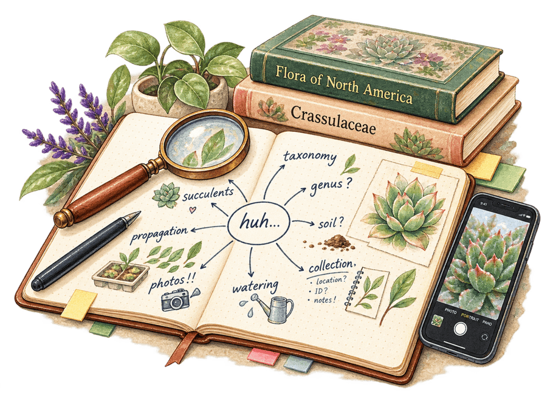

The rabbit holes are kind of the point

Plants have been one of the longer-running ones.
I started collecting succulents because I liked them. Then I wanted to know what they were called. Knowing the names led to taxonomy, which led to documenting my collection and digging through old photos to figure out what I used to have.
Now I have an extensive collection of plants with accession numbers.
That escalated.
Other interests have gone in completely different directions. I’ve picked up hobbies because something looked fun, because I wanted to make a specific thing, because someone I love was interested in it, or because I encountered something and needed to understand how it worked.
Somewhere in my house there is almost certainly a box of supplies from one of them waiting patiently for me to circle back.
